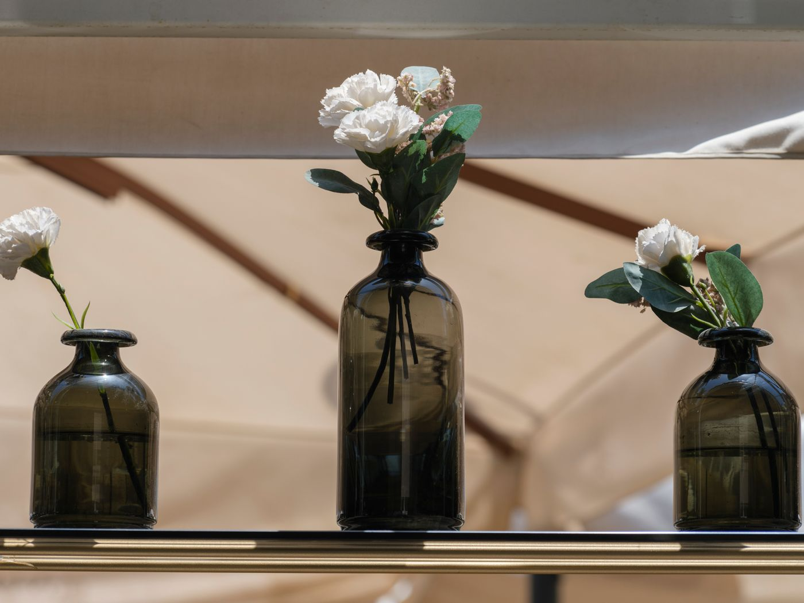
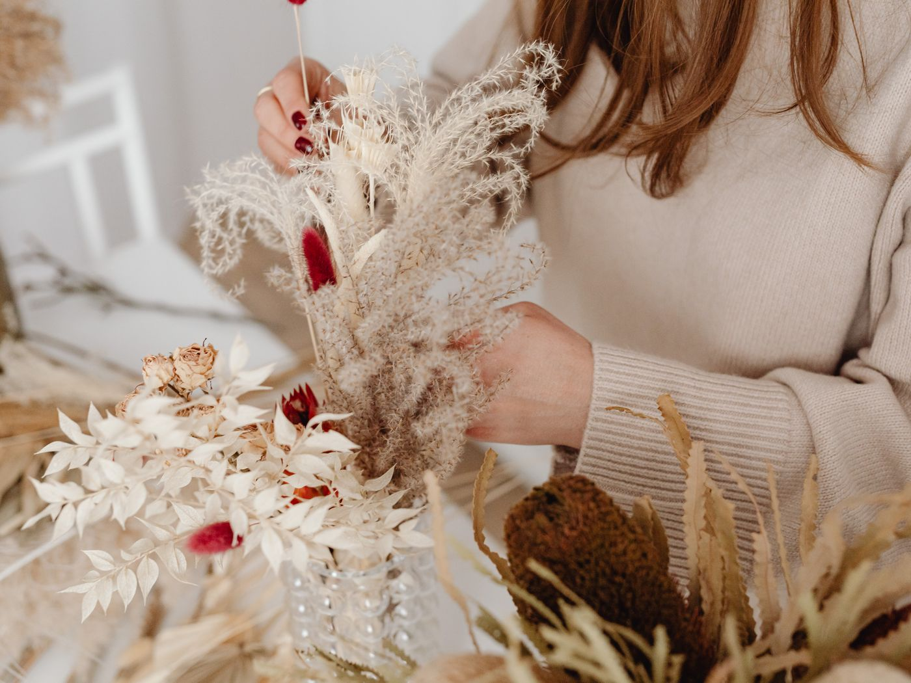
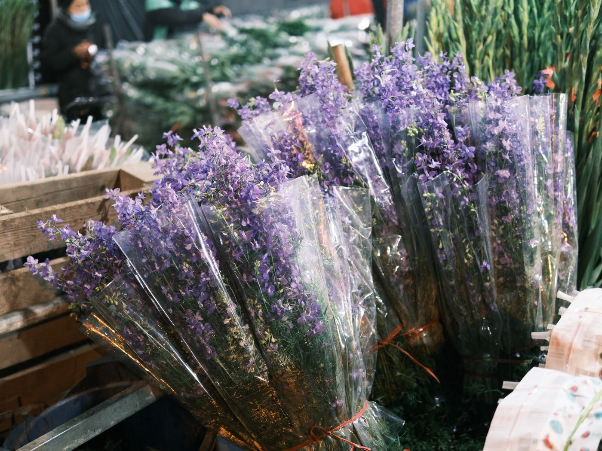
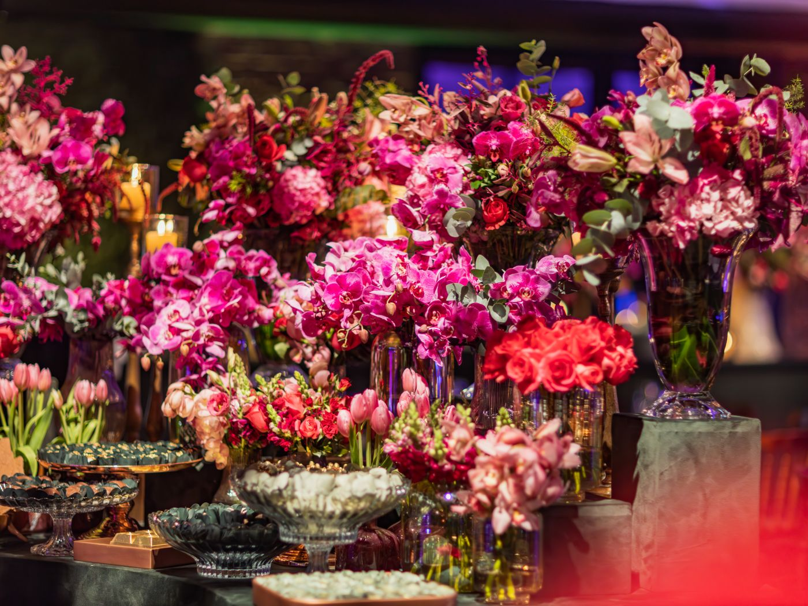

Custom bouquets, wedding florals and weekly stems — grown with love, arranged with soul, delivered with care.
Tell us the feeling — we'll build it in blooms, wrapped and ribboned.
From bouquet to arch to last-dance petals — full-service florals.
Fresh stems on your table every week. Cancel or pause anytime.
Houseplants that thrive, plus honest advice to keep them that way.
Watch it bloom — that's how every order feels.
Keep scrolling — the gallery glides. (Real arrangements — this is the gallery your photos live in.)




Cut this morning, arranged this afternoon, on your table tonight.
Every stem placed by hand. Nothing here is accidental.
“Our wedding looked like a fairytale. Guests are still talking about the arch. I cried, my mom cried, the photographer cried.”
“The weekly subscription is my favorite self-care. Every Friday my kitchen turns into a garden.”
“Ordered a 'just because' bouquet at noon, it arrived by 4 with a handwritten note. She said yes to a second date. Coincidence? No.”
Conditioned daily so they last the week, not the weekend.
Yes — same-day across the city for orders placed before 1pm, next-day beyond that.
Three to six months is ideal, but reach out regardless — we've pulled off beautiful miracles on short notice.
Fresh water every two days, a snip of the stems, and keep them out of direct sun. Every bouquet comes with care notes.
Anytime, no questions. Going on vacation? Gift that week's stems to a friend instead.
With extra care. Tell us about them, and we'll make something worthy.
Order below, call us, or wander in — the studio always smells amazing.